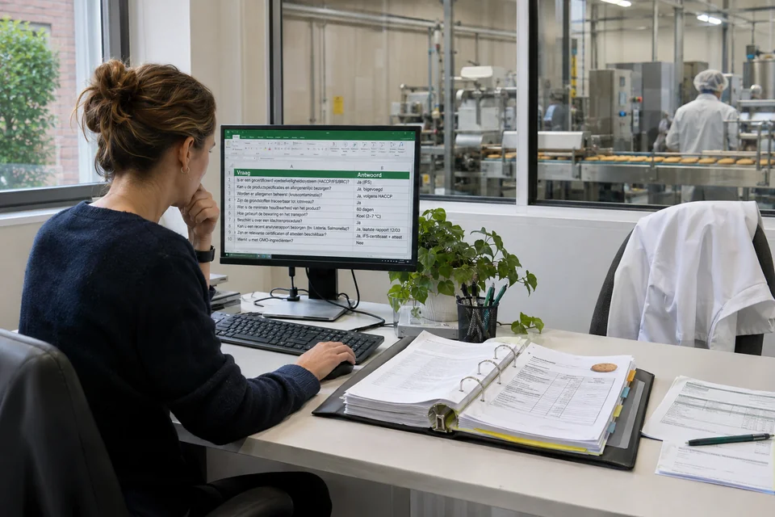
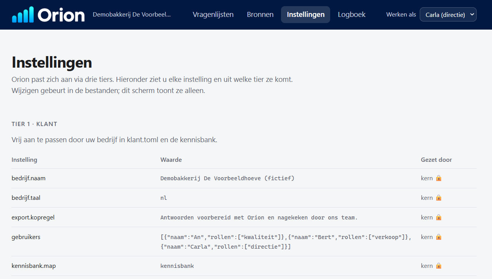

Voor kwaliteitsteams in voedingsbedrijven
De vragenlijst van uw klant, ingevuld vanuit uw eigen documenten.
Geen bron, geen antwoord.
Een retailer vraagt hoe u allergenen beheert. Een afnemer wil uw certificaten en uw traceerprocedure. Orion zoekt de antwoorden in de documenten die u zelf hebt goedgekeurd en zet bij elk antwoord de bron. U leest na, u keurt goed, u verstuurt.
Aujourd’hui, Orion rédige ses réponses en néerlandais et l’accompagnement se fait en néerlandais. Les réponses en français sont en développement.
 Vergroot het vragenlijstoverzicht
Vergroot het vragenlijstoverzichtDeze schermen tonen een fictieve bakkerij in de Orion-demo.
Dezelfde vragen, telkens in een ander bestand
Allergenen. Certificaten. Herkomst. Traceerbaarheid. Elke klant stelt ze op zijn manier, in zijn eigen Excel-bestand. Het antwoord staat ergens in uw specificaties, uw procedures of een vragenlijst van vorig jaar. Iemand moet het zoeken, overtypen en nakijken, tussen een audit en een klacht door.
Elk antwoord is een handtekening van uw bedrijf. Een verouderd certificaat of een fout over een allergeen komt later terug, bij een audit of bij uw klant.

Fictief voorbeeld
Van klantvraag naar antwoord
Vraag van de klant
Hoe registreert u binnenkomende leveringen?
Voorstel van Orion
Bij ontvangst registreren we de ontvangstdatum en het lotnummer.
Bekijk de bron
Werkinstructie ontvangst · versie 2.1 · § 3."Noteer bij elke levering de ontvangstdatum en het lotnummer op het ontvangstformulier."
Uw medewerker controleert de bron, past het antwoord aan waar nodig en beslist of het naar de klant gaat.
Zo werkt Orion
Vier stappen. Orion doet het zoek- en overtypwerk. De beslissing blijft bij u.
- 01
U bepaalt de bronnen.
U zet de documenten die u goedkeurt in het bronnenregister, met versie, vervaldatum en de naam van wie ze heeft goedgekeurd.
- 02
U laadt de vragenlijst op.
U start met het Excel-bestand dat uw klant heeft gestuurd.
- 03
Orion zoekt en controleert.
Orion zoekt per vraag het antwoord in uw bronnen en noteert uit welk document het komt. Een vaste controle toetst daarna elk antwoord aan de bron: citaten, cijfers, allergenen en ontkenningen.
- 04
U keurt goed en verstuurt.
U krijgt hetzelfde Excel-bestand terug, ingevuld en leesbaar opgemaakt. Orion verstuurt nooit zelf iets naar uw klant.
De film toont ook het rechtstreeks lezen van bronbestanden. Vandaag zetten we uw documenten samen met u klaar als tekst.
Lees de tekst van de video
- Twee informatiestromen komen samen. De klantvragenlijst bepaalt welke vragen Orion verwerkt. Actuele bedrijfsdocumenten leveren het bewijs.
- Orion leest de bestanden. Orion haalt de vragen uit Excel en leest broninformatie uit pdf-, Word- en Excel-bestanden.
- Orion zoekt bewijs per vraag. Orion koppelt elke vraag aan relevante documenten, zoals de productspecificatie en allergenenmatrix.
- Orion stelt een onderbouwd antwoord voor. Bij het antwoord ziet de kwaliteitsmanager welke bron het voorstel ondersteunt.
- Vaste regels toetsen het antwoord. Orion controleert broncitaten, cijfers, allergenen, ontkenningen, productverwijzingen en onbewezen claims.
- De kwaliteitsmanager beslist. De manager beoordeelt elk voorstel en moet allergenen controleren aan de hand van de actuele matrix.
- Alleen goedgekeurde antwoorden gaan naar Excel. Orion vult het oorspronkelijke bestand in. Een medewerker downloadt en verstuurt het.
Vijf regels waar Orion zich aan houdt
Deze regels zitten in de kern van Orion. Ze staan niet in een instelling die iemand kan uitzetten.
- Geen bron, geen antwoord.
- Vindt Orion geen bron, dan schrijft het niets. Ook geen voorstel.
- Een verlopen bron telt niet.
- Is een certificaat of specificatie over datum of gewijzigd, dan blokkeert Orion het antwoord tot uw kwaliteitsverantwoordelijke de bron opnieuw valideert.
- Allergenen altijd langs uw team.
- Vragen over allergenen worden apart gemarkeerd. Uw kwaliteitsverantwoordelijke kijkt ze altijd zelf na.
- Aansprakelijkheid is mensenwerk.
- Vragen over aansprakelijkheid, vrijwaring of auditkosten gaan altijd naar een mens. Orion doet daar geen voorstel.
- Alles in het logboek.
- U ziet later terug welk antwoord uit welk document kwam, wie het heeft goedgekeurd en wanneer.


Deze schermen tonen een fictieve bakkerij in de Orion-demo.
Vier manieren om een vragenlijst in te vullen
Elke manier heeft haar plaats. Kies wat bij uw bedrijf past.
Schuif de tabel opzij om alle vier de opties te vergelijken.
| Zelf in Excel | Een consultant | Een algemene AI-assistent | Orion | |
|---|---|---|---|---|
| Waar komt het antwoord vandaan? | Uit uw hoofd en uw mappen | Uit uw documenten en de kennis van de consultant | Uit wat u op dat moment oplaadt, en uit algemene kennis | Alleen uit documenten in uw bronnenregister |
| Wat als er geen bron is? | U zoekt verder of belt een collega | De consultant vraagt het u | De assistent kan toch een antwoord schrijven | Geen antwoord. De vraag blijft open voor uw team |
| Wie houdt bij welke versie geldig is? | U | U of de consultant | Niemand, tenzij u dat zelf organiseert | Het bronnenregister, met vervaldatum |
| Wie keurt goed? | U | U | U, zonder vast spoor | U, met een logboek |
| Goed als | U weinig vragenlijsten krijgt | U niemand voor kwaliteit in huis hebt | U een tekst wilt herschrijven of samenvatten | U vaak dezelfde vragen krijgt en elk antwoord moet kunnen aantonen |
Wat Orion vandaag kan, en wat nog niet
Orion is nieuw. We hebben nog geen klanten en geen gemeten cijfers over tijdwinst. Die meten we samen met de eerste pilotbedrijven. U leest hier dus geen beloftes over uren of procenten.
Werkt vandaag
- Excel-vragenlijsten inlezen en ingevuld teruggeven
- Bij elk antwoord het brondocument
- Een bronnenregister met versie, vervaldatum en goedkeurder
- Een vaste controle van elk antwoord tegen de bron
- Allergeenvragen apart gemarkeerd
- Een logboek van elke goedkeuring en export
- Vakkennis voor de voedingssector, met de 14 EU-allergenen
In ontwikkeling
- Bronnen rechtstreeks lezen uit pdf, Word en Excel. Vandaag zetten we uw documenten samen met u klaar als tekst.
- Vragenlijsten in Word
- Antwoorden in het Frans en het Engels
Doet Orion niet
- Vragenlijsten invullen in het online portaal van uw klant. Orion bereidt de antwoorden met bron voor; u neemt ze zelf over in het portaal.
- Uw specificaties of uw kwaliteitssysteem beheren. Orion werkt met de documenten die u al hebt.
Uw receptuur blijft van u
Voor de pilot start, bespreken we met uw IT-verantwoordelijke waar Orion draait en welke gegevens waarheen gaan. U krijgt vooraf de verwerkersovereenkomst en de lijst van alle partijen die gegevens verwerken. Pas daarna beslist u.


Vergroot de instellingenDeze schermen tonen een fictieve bakkerij in de Orion-demo.
Test Orion op uw eigen vragenlijsten
We zoeken voedingsbedrijven in West-Vlaanderen met 20 tot 249 medewerkers voor de eerste pilots in 2027. We starten met een paar vragenlijsten die u echt gekregen hebt en spreken vooraf één meetbaar doel af. Ziet u geen verschil, dan stoppen we.
- Wat u meebrengt
- een recente vragenlijst en de documenten waarin uw team de antwoorden zoekt.
- Wat uw team doet
- de voorstellen bekijken, de bronnen openen en corrigeren waar nodig.
- Wat we samen meten
- hoeveel tijd het zoeken en nakijken kost, vandaag en met Orion, en hoeveel antwoorden uw team nog moet verbeteren.
U spreekt met de maker
Orion is gemaakt door Grow Faster, de onderneming van Erlend Hollebosch. De demo, de opstart en de opvolging gebeuren in het Nederlands, bij u in het bedrijf.
Veelgestelde vragen
Kan Orion zich vergissen?
Ja. Orion is een hulpmiddel. De kwaliteit hangt af van uw brondocumenten, en uw team keurt elk antwoord goed voordat het vertrekt. Daarom toont Orion bij elk antwoord de bron.
Waarom niet gewoon een algemene AI-assistent?
Om een tekst te herschrijven is die prima. Een algemene assistent werkt met wat u hem op dat moment geeft en houdt zelf niet bij welke documenten goedgekeurd en nog geldig zijn. Orion is rond dat register gebouwd.
Moet ik al mijn gegevens eerst in een nieuw systeem zetten?
Nee. U begint met de documenten die u vandaag al gebruikt.
Werkt Orion ook buiten de voedingsindustrie?
Nog niet. Orion start bij voedingsbedrijven, omdat de vakkennis en de controles daarvoor gebouwd zijn. Andere sectoren volgen later.
Wat kost het?
In de pilot meten we eerst hoeveel tijd u wint. Daarna krijgt u een vast bedrag per bedrijf, niet per vraag en niet per gebruiker.
Is Orion gecertificeerd?
Nog niet. Uw IT-verantwoordelijke krijgt vooraf alle informatie over beveiliging en gegevens.
Waarom nakijken nodig blijft
Onderzoek in de zorg, waar overgetypte gegevens nauwkeurig worden nagekeken, vindt 2 tot 4 fouten per 100 overgetypte velden. In vrije tekstvelden zijn dat er meer. Bronnen: Hong et al., BMJ Open, 2013 · Mays & Mathias, JAMIA, 2019. In een experiment met 758 consultants werkten wie AI gebruikte sneller en beter bij taken die AI aankan. Bij een taak buiten het bereik van AI vonden ze 19 procentpunten minder vaak de juiste oplossing, terwijl beide taken even moeilijk leken. Bron: Dell’Acqua et al., Organization Science, 2026.
Stuur ons één vragenlijst
Kies een vragenlijst die u onlangs hebt ingevuld. We tonen u wat Orion ermee doet, met uw eigen documenten.
Plan een demo op uw eigen vragenlijst